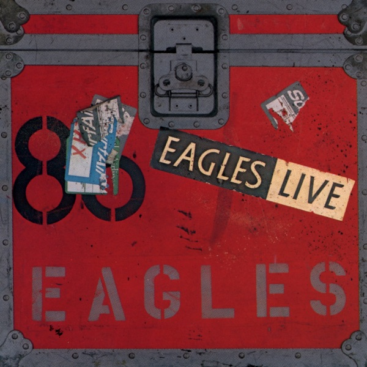

Eagles Live
Eagles
Upgrade idea: This original pressing is the authentic artifact. No significant audiophile reissue exists for Eagles Live — the original Asylum pressing is the reference.
- Original release
- 1980
- Pressing year
- 1980
- Country
- US
- Format
- 2× Vinyl LP, Album (SP - Specialty Pressing, Gatefold)
- Label / Cat#
- Asylum Records – BB-705
- Genres
- Rock
- Styles
- Classic Rock
- Discogs release
- 808486
- Discogs master
- 59525
- Apple Music
- Eagles Live
- Wikipedia
- Eagles Live
Production notes
Tracklist (Discogs)
| A1 | Hotel California | 6:55 |
| A2 | Heartache Tonight | 4:35 |
| A3 | I Can't Tell You Why | 5:24 |
| B1 | The Long Run | 5:35 |
| B2 | New Kid In Town | 5:45 |
| B3 | Life's Been Good | 9:38 |
| C1 | Seven Bridges Road | 3:25 |
| C2 | Wasted Time | 5:40 |
| C3 | Take It To The Limit | 5:20 |
| C4 | Doolin-Dalton (Reprise II) | 0:44 |
| C5 | Desperado | 4:04 |
| D1 | Saturday Night | 3:55 |
| D2 | All Night Long | 5:40 |
| D3 | Life In The Fast Lane | 5:10 |
| D4 | Take It Easy | 5:20 |
Tracklist (Apple Music)
| 1 | Hotel California (Live) | 7:00 |
| 2 | Heartache Tonight (Live) | 4:33 |
| 3 | I Can't Tell You Why (Live) | 5:17 |
| 4 | The Long Run (Live) | 5:51 |
| 5 | New Kid In Town (Live) | 5:53 |
| 6 | Life's Been Good (Live) | 8:56 |
| 1 | Seven Bridges Road (Live) | 3:04 |
| 2 | Wasted Time (Live) | 5:21 |
| 3 | Take It to the Limit (Live) | 5:14 |
| 4 | Doolin-Dalton (Reprise II) [Live] | 0:41 |
| 5 | Desperado (Live) | 3:57 |
| 6 | Saturday Night (Live) | 3:47 |
| 7 | All Night Long (Live) | 5:34 |
| 8 | Life In the Fast Lane (Live) | 5:09 |
| 9 | Take It Easy (Live) | 5:16 |
Personnel & credits
- Ted Jensen — Mastered By
- Bill Szymczyk — Producer
Identifiers
- Rights Society: ASCAP
- Matrix / Runout: BB 705 A ED SP TJ IS IT ILLEGAL TO YELL MOVIE IN A FIREHOUSE? (Side 1 variant 1)
- Matrix / Runout: BB 705 B SP "HELLO FEDERAL?...SHIP IT!!" 1-1 SM2-1 (Side 2 variant 1)
- Matrix / Runout: BB 705 C 7 ED SP 0-2 SM4-2 "NOT TONIGHT, THANKS... (Side 3 variant 1)
- Matrix / Runout: BB 705 D 4 ED SP 0-1 SM1-1 ...I'VE GOT TO REST UP FOR MY MONSTER." (Side 4 variant 1)
- Matrix / Runout: BB 705 A 5 ED SP TJ IS IT ILLEGAL TO YELL "MOVIE" IN A FIREHOUSE? 0 - 1SM1 - 2 (Side 1 variant 2)
- Matrix / Runout: BB 705 B SP "HELLO FEDERAL?...SHIP IT!! " 1 - 1SM1 - 1 (Side 2 variant 2)
- Matrix / Runout: BB 705 C 7 ED SP "NOT TONIGHT, THANKS... 0 - 1Sm3 - 2 (Side 3 variant 2)
- Matrix / Runout: BB 705 D 4 ED SP 0 - 1Sm1 - 3 ...I'VE GOTTA REST UP FOR MY MONSTER." (Side 4 variant 2)
- Matrix / Runout: BB 705 A 4 ED SP 0-1 TJ IS IT ILLEGAL TO YELL "MOVIE" IN A FIREHOUSE? (Side 1 variant 3)
- Matrix / Runout: BB 705 B5 ED SP 0-4 "HELLO FEDERAL?...SHIP IT!!" (Side 2 variant 3)
- Matrix / Runout: BB 705 C 6 ED SP 0-2 "NOT TONIGHT, THANKS... (Side 3 variant 3)
- Matrix / Runout: BB 705 D 5 ED SP 0-3 ...I'VE GOT TO REST UP FOR MY MONSTER." (Side 4 variant 3)
- Matrix / Runout: BB 705 A 5 ED SP 0-1SM-5 IS IT ILLEGAL TO YELL "MOVIE" IN A FIREHOUSE? (Side 1 variant 4)
- Matrix / Runout: BB 705 B6 ED SP 0-1SM1-3 SP "HELLO FEDERAL?...SHIP IT!!" (Side 2 variant 4)
- Matrix / Runout: BB 705 C 7 ED "NOT TONIGHT, THANKS... 02SM 1-1 (Side 3 variant 4)
- Matrix / Runout: BB 705 D 4 ED SP 0-1SM1-3 ...I'VE GOT TO REST UP FOR MY MONSTER." (Side 4 variant 4)
- Matrix / Runout: BB 705 A 4 ED SP EDP 0-1SM2-2 STERLING TJ IS IT ILLEGAL TO YELL "MOVIE" IN A FIREHOUSE? (Side 1 variant 5)
- Matrix / Runout: BB 705 B5 ED SP EDP STERLING "HELLO FEDERAL?...SHIP IT!!" 0-1SM1-2 (Side 2 variant 5)
- Matrix / Runout: BB 705 C 6 ED SP EDP STERLING "NOT TONIGHT, THANKS... (Side 3 variant 5)
- Matrix / Runout: BB 705 D 7 ED SP EDP STERLING ...I'VE GOTTA REST UP FOR MY MONSTER." (Side 4 variant 5)
Notes
Fold-out poster insert Included.
Gatefold cover has "embossed" metal parts of trunk.
Issued with custom printed inner sleeves with additional photos and song titles.
"SP" in label matrix denotes a [l27576] pressing.
Copy with runouts "variant 2" has disc 1 with on Side 2 the same label as Side 1, but plays with the correct tracks.
Runouts: all versions have the text etched, except for the following ones that are stamped.
- Side 1: STERLING (EDP);
- Side 2: STERLING SRC;
- Side 3: STERLING (EDP);
- Side 4: (EDP) STERLING.
Notes & discrepancies
- Total runtime differs by 97s (Discogs=4630s, Apple Music=4533s) — likely a different master/remaster.
Eagles Live is the Eagles’ first official live album, released in November 1980 on Asylum Records. Recorded across multiple concert dates from 1976 to 1980 — including shows from the Hotel California and The Long Run tours — it served as the band’s farewell document before their breakup following the tensions that had fractured the lineup throughout the late 1970s. The double album captures the Eagles at full live command, delivering polished but powerful renditions of their biggest hits alongside album cuts, with the vocal harmonies and guitar interplay that made them one of the defining live acts of the era.
Eagles Live is notable for including some of the only live recordings of Hotel California-era material from that specific touring period, and for featuring Joe Walsh in full flight as a live performer — his guitar work on tracks like “Life’s Been Good” and “In the City” showcases a harder-rocking dimension of the band that studio recordings sometimes underplayed. The album also includes a remarkable live version of “Seven Bridges Road,” an a cappella harmony showcase that became one of the band’s signature live moments.
This 1980 original US Asylum Records pressing (catalog BB-705) is a two-LP set pressed at the time of release. The deadwax codes
BB 705 A ... ED SPidentify the pressing as originating from Specialty Records Corporation (SP) with engineer initials ED cutting. The famously humorous deadwax messages — “Is it illegal to yell ‘MOVIE’ in a firehouse?” and “Hello Federal?… Ship it!!” — are a signature of Eagles/Asylum pressings from this era, added by the mastering engineers as inside jokes.About this 1980 US pressing (2× Vinyl, LP): Asylum Records catalog BB-705, original 1980 US pressing. Double LP. Matrix BB 705 A/B/C/D with SP (Specialty Records) stampers.